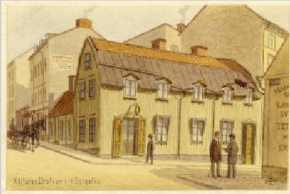
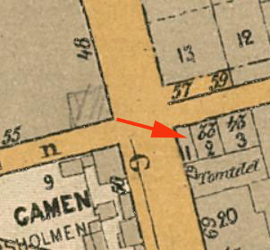
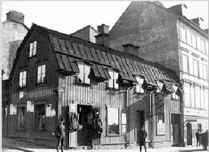
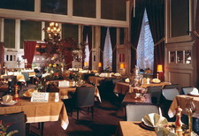
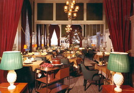
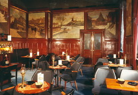

Södermalm i tid och rum

24.

{kind=link}

|
Drufvan var ursprungligen en vanlig krog, men på 1880-talet rustades stället upp,
fick stoppade möbler i gästrummen och kungaporträtt på väggarna
samt blev källare med gott anseende. Innehavarinnan, fru Anna Zetterholm, som ärvt Drufvan efter sin man, dog 1898, men traditionerna förvaltades väl av efterträdaren C. A. Borgström, som gått i
Bengt Carlssons och Ivar Bäckströms skola på du Nord. Det pittoreska 1700-talsnuset där källaren var inrymd stod i vägen för 1900-talets
nya Götgata, varför Drufvan flyttade norrut, först till hörnet av
Kocksgatan, sedermera snett över Götgatan till nr 72, där den fortfarande håller till. Drufvan eller Förgyllda Druvan var ett vanligt krognamn och känt sedan 1700-talet bland annat från Västerlånggatan, Skräddargränd, Riddarhustorget och Artillerigatan. 1867 låg Drufvan i hörnet Götgatan / Bondegatan och därefter i en egen byggnad vid Götgatan 55 (nuvarande 67). Längsta tiden existerade Källaren Drufvan i bottenvåningen av bostadshuset Götgatan 50 (nuvarande 72). Här öppnade restaurangen 1912 i en nybyggd fastighet som hade ritats av arkitekt Hjalmar Erikson. I bottenvåningen fanns butiker, ett "Schweizeri" med "Café" och "Matsal" (Källaren Drufvan) samt "Yttre vestibul", "Entré" och "Samlingssal" för biografen Bio-Kino. Restaurangens lokaler sträckte sig i vinkel mot Götgatan och Åsögatan och bestod av flera matsalar och caféer. På hörnet fanns en vacker flaggskylt från 1700-talet med gyllene druvklasar och vinblad.
   Huvudentrén var från Götgatan. Till vänster låg schweizeriet och till höger stora matsalen som kunde slås ihop med två mindre matsalar via skjutdörrar. Väggarna i stora matsalen var klädda med träpanel och speglar och i bardelen fanns målningar med gamla Stockholmsmotiv skapade av Carl Olof Bartels. Man hade även dans "alla dagar utom måndag". På 1950- och 1960-talen hörde Drufvan tillsammans med Restaurang Port Arthur (nuvarande Pelikan) och Restaurang Kvarnen till Södermalms mest populära krogar. På hösten 1950 lades Bio-Kino ner och lokalerna övertogs av Källaren Drufvan vilken nyttjade den gamla biosalongen som bland annat vin- och spritförråd. Direkt söder om fastigheten uppfördes Skatteskrapan (invigd 1959). Huset Götgatan 72 stod länge kvar som en främmande fågel bland kvarterets nya byggnader och revs slutligen i slutet av 1960-talet. Drufvan flyttade 1967 till Lillienhoffska palatsets källarvalv. Till den nya adressen medtogs även väggmålningarna från Götgatan. Den sista adressen Drufvan hade i källarvåningen av Lillienhoffska palatset där restaurangen stängde 1975.
|
{kind=link}
{kind=link}
{kind=link}